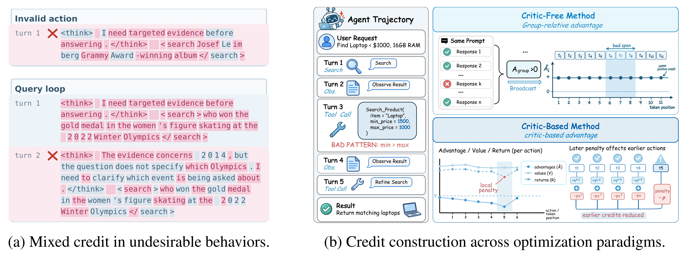
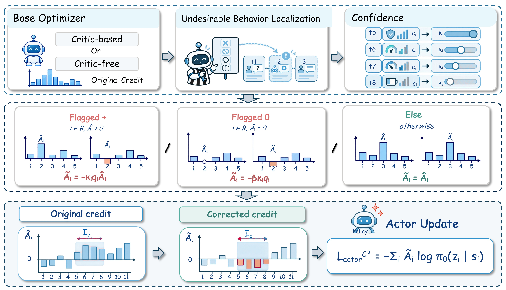
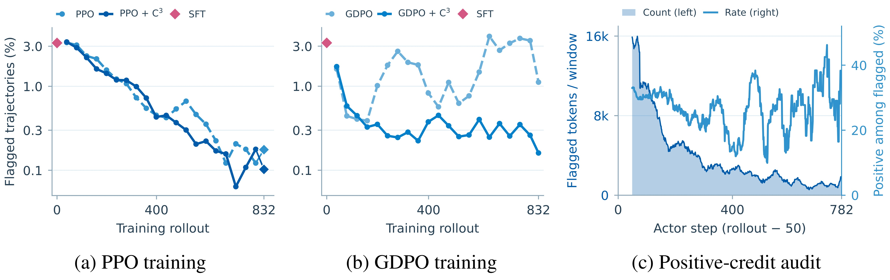
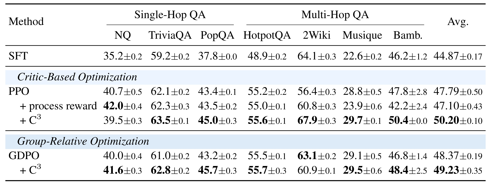
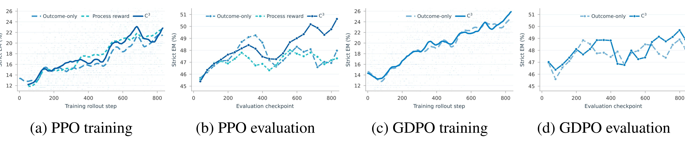
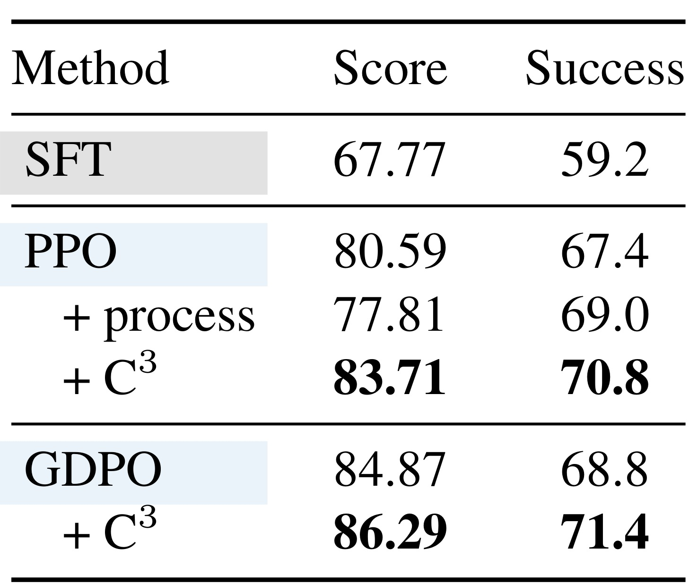
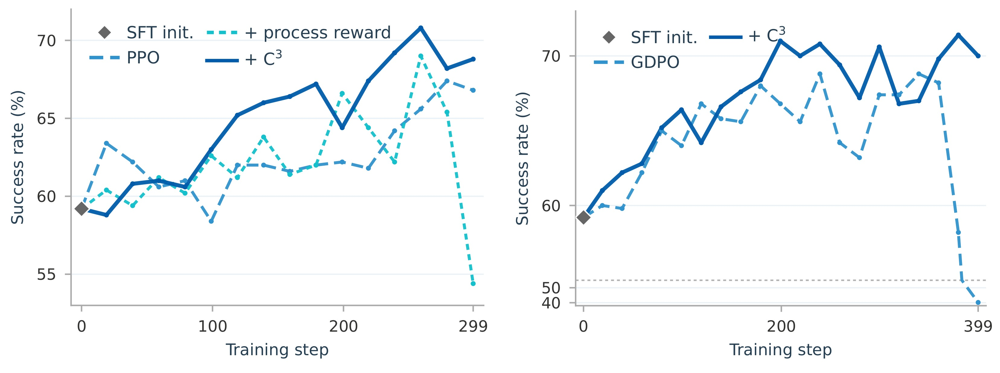
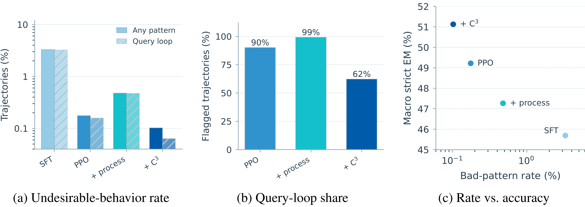
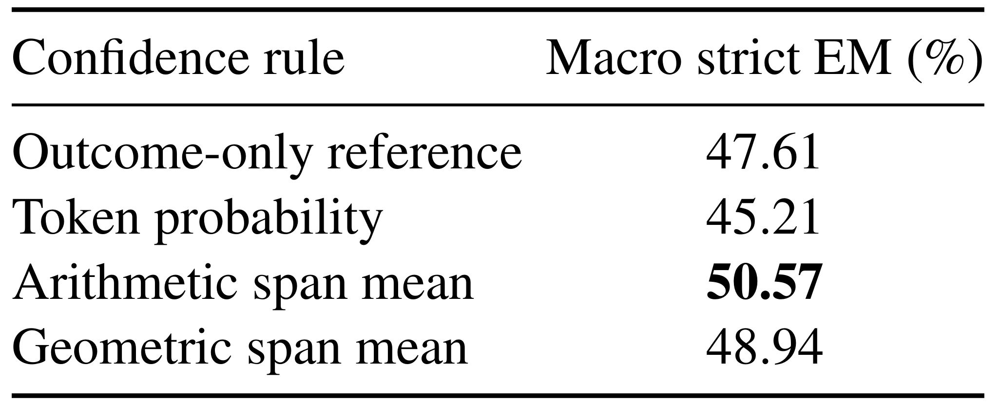
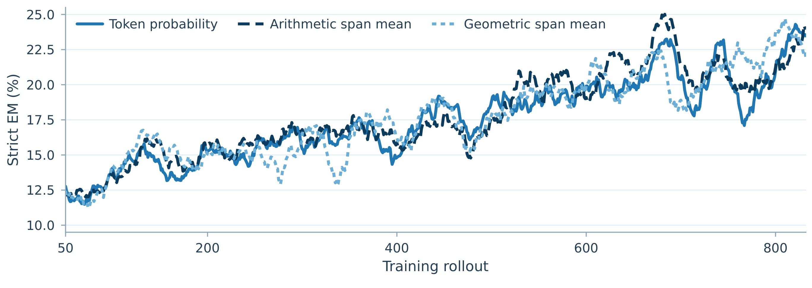

C3：在优势估计之后纠正多轮智能体的局部错误信用
本文精读 C3: Rethinking Process Supervision via Confidence-Guided Credit Correction in Multi-Turn Reinforcement Learning，中文可译为“通过置信度引导的信用纠正重新思考多轮强化学习过程监督”。作者为 Ai Jian、Haoran Pan、Eryu Guo、Haojin Yang、Jinghan He、Xiaoyun Zhang、Jiangbo Pei、Peiyu Liu；第一作者主机构北京邮电大学，共同一作来自北京大学，另有中科院自动化所、中国科学院大学和对外经济贸易大学合作。论文于2026年10月14日在 arXiv 公开，唯一论文入口。本文按 arXiv 预印本记录；PDF 页眉自称 ICLR 2027 会议论文，但本轮未核验官方接收。文内提到匿名代码仓库，本轮未核验其访问性和实现完整性，不宣称代码已开源。
只用最终结果训练多轮智能体时，即使整条轨迹成功，不合适的局部行为仍可能获得正的词元优势并被进一步强化。如何纠正这些局部错误信用，同时避免改变无关行为的信用，是本文要解决的问题。
1. 背景和问题
多轮智能体强化学习的学习对象不是一段孤立答案，而是交替出现的动作与环境观察。检索问答中，模型先判断信息是否充分，再发起查询，读取段落，继续查证，最后输出答案；购物环境中，它需要搜索商品、检查属性、选择颜色和尺码，满足约束后购买。这些任务很自然地提供终局奖励，例如答案是否正确、购买是否成功。但终局成功只说明最终满足了任务要求，不能说明途中每个动作都值得鼓励。一次多余搜索、一次错误工具调用、一次无效选项点击，都可能被后续有效动作弥补。只要学习信号主要由轨迹结果构造，局部动作就有机会分享整个轨迹的正信用。
作者把这种现象称为 misguided reinforcement，即“错误方向的强化”。这里的“错误”有非常具体的定义：外部过程检测器已经把某个行为判为不良，但该行为范围内的部分词元在基础强化学习算法中仍得到正优势。优势为正意味着策略更新倾向于增加这些词元出现的概率。因此，问题不仅是模型偶尔犯错，还包括训练更新在局部奖励了已经识别的错误。这与“训练后错误率有没有下降”是两个不同层面的问题；错误率下降，也可能仍有一批坏动作在每次更新中被错误强化。后者会削弱学习效率，也可能形成难以从最终准确率直接发现的残留行为模式。

Figure 1 左侧展示两类具体行为。第一类是无效动作：检索标签缺失必要闭合形式，实际不能按预期调用工具，但图中仍有一部分词元呈现正优势；第二类是查询循环：连续轮次发出相同查询，没有补上新的证据缺口，却仍混合获得正负信用。粉红与灰蓝标识优势方向，阅读时不能把颜色理解为词元正确或错误的人工标签，而应理解为优化器原本打算强化或压低的方向。相同的不良行为内部包含不同符号，说明对整段行为的语义判断与逐词元信用并未自动一致。
右侧进一步区分有评论器与无评论器两种信用来源。有评论器方法通过回报、价值函数及优势估计建立时间上的联系，把惩罚放入某一轮回报后，影响可能沿折扣链传到更早的动作；那些动作即使与错误无关，也可能被连带压低。无评论器的组相对方法则根据同一问题多条响应的整体表现构造相对优势，成功响应中的局部错误可能继承整条响应的正分。图里的购物任务用“最低价格高于最高价格”的矛盾参数说明，最终找到合适电脑并不会让之前那次错误参数调用变得合理。两种优化范式因此有不同的传播机制，却都不能保证局部语义质量与优势方向吻合。
已有过程监督通常把中间行为的评分加入奖励。例如发现重复查询就在该轮给惩罚，再重新计算回报和优势。这个方案直观，而且可以减少某些明显的工具错误，但它把“行为是否合理”转换为“未来回报如何变化”，仍要经过一次信用传播。惩罚的时点、尺度与折扣都会影响作用范围，最终可能同时惩罚有帮助的前序搜索或正确推理。相反，把行为惩罚放到终局，又会丢失定位信息。本文不是声称过程奖励一概无用，而是提出另一种插入监督的位置：先让原算法完成信用构造，再查看那些已知不良行为是否得到了不该有的正信用。
这一定位解释了 C3 与更细粒度优势估计的区别。分层信用分配、轮级优势估计或动作到词元分配，主要研究如何把整体结果更合理地分发到中间步骤；C3 接受这些算法已有的输出，额外检查分配结果是否与检测器判定冲突。它也不是训练一个全面判断所有推理好坏的过程奖励模型，而是围绕两个可操作的局部行为定义进行修正。被检测范围之外的信用完全保留，因此其干预范围容易审计；代价是检测器不知道的错误不会被自动纠正，错误检测到的合理行为也可能受到不当抑制。
对于工具型大模型，这项工作的研究价值在于把三个容易混为一谈的对象拆开：最终任务奖励、优势估计、actor 实际更新信号。奖励告诉系统最终是否完成目标；优势估计描述某个动作相对于基线的贡献；更新信号决定策略下次更容易生成什么。局部过程证据可以在第三处发挥作用，不必始终先改写第一处再期待第二处自动定位。这种设计尤其适合已有稳定训练栈、希望增加小范围纠错而不重训评论器的场景，但是否节省实际训练资源，仍需要额外时间和显存测量，原文没有提供完整开销表。
本文与推荐系统的关系属于研究启发，实验本身并未覆盖推荐排序或在线广告。购物智能体的任务也不是候选商品排名模型，而是多轮交互中完成约束购买。可迁移的想法是：当业务总体奖励允许一系列中间操作共同分享正反馈时，需要检查明确违规或无效的局部动作是否也被赋予正梯度。迁移之前必须重新建立动作边界和检测规则，不能把“用户最后购买”直接视为每一次曝光、搜索或操作都合理的证据；同样不能根据本文的离线购物成功率声称推荐转化率会提高。
接下来的阅读重点有三个：定位的是完整责任轮次还是单个动作，决定什么词元被修改；置信度来自哪一个策略快照，决定纠正是否引入额外梯度；修正发生在白化之前还是之后，决定其余词元的信用是否真的保持原样。这些细节使 C3 不只是给优势乘一个负号，而是一个边界明确、可以嵌入不同优化器的后处理算子。
2. 方法
2.1 从行为审计到责任轮次定位
基础训练先产生完整轨迹，每轮动作由一段连续词元构成，观察本身不等同于需要更新的动作词元。按原文式（3），忽略裁剪与正则项后的更新方向可以写为：
符号解释：$\theta$ 是待更新策略参数，$\theta_k$ 是采集当前轨迹的行为策略快照，$\tau$ 为轨迹，$i$ 是全局生成词元位置，$z_i$ 是词元，$s_i$ 为其解码上下文，$\widehat A_i$ 是原优化器给出的优势，$J$ 是策略目标，$\mathbb E$ 表示采样期望。这个式子把问题落实为优势的符号：检测器认为不良的词元若优势仍为正，就会朝增加概率方向更新。作者的审计正是对照检测器定位与这个符号，而不是仅统计最终任务失败。
检测器输出附录式（12）的事件四元组，重叠时按式（13）汇总：
符号解释：$e$ 为事件，$I_e$ 是承担责任的完整轮次词元跨度，$d_e$ 为行为类别，$q_e$ 为严重度，$J_e\subseteq I_e$ 为解析出的工具或回答动作跨度，$q_i$ 为覆盖词元的最大严重度，$\mathcal B$ 是待检查词元集合。纠正范围与置信度统计范围不同：前者覆盖完整责任轮，后者优先只覆盖解析动作；动作不能解析时才令两者相同。无效动作和精确重复查询严重度为一，近似重复为零点五。查询比较先做 Unicode 归一化、大小写折叠、去零宽字符、标点转空格及空白压缩；近似重复还要求字符三元组 Jaccard 相似度至少零点九、长度至少八。首次查询保留，后续重复才触发事件。只有格式评测失败、未作答、截断或仅搜索后终止的情况另行记录，不自动生成这里的纠正事件；这意味着模型终止问题不能完全靠当前检测器直接修复。
2.2 置信度引导的局部信用纠正

Figure 2 的第一行从基础优化器已经构造出的原始信用开始。检测器标出责任跨度，行为策略在动作跨度上提供置信度，三路信息汇合到 actor 一侧。第二行明确区分三种情况：被标记且优势为正、被标记且优势恰为零、以及其余所有词元。第三行用修改前后柱形强调只在局部范围改变方向，再把结果送入 actor 更新。框图没有让检测器回头修改奖励、回报或评论器训练目标，也没有要求部署时增加一个新的判断器。这一数据流是“后估计纠正”能够与不同基础算法连接的原因。
阅读中间的零优势分支尤其需要谨慎。图给出可选负偏置项，但论文主实验将其系数设为零，因此图上画出的可能性并不代表主结果训练中真的惩罚了零优势。正优势反转后乘上严重度和置信度，绝对值可以比原正优势小；图的重点是方向与定位，不是让所有坏词元获得相同强度的负数。没有命中的词元和原本已为负的坏词元沿“其余”分支直接穿过，保留基础优化器的信息。若同一事件跨越完整思考轮，其影响仍可能包含该轮内对任务有用的词元，所谓局部是相对于整轨迹而言，不能被理解为已经精确识别每一个因果错误词元。
置信度也不是外部评审对行为正确性的概率。它来自生成该轨迹的行为策略对动作词元的概率，因此只能衡量模型对自己的输出有多确定。高置信错误被更强纠正，低置信错误被较轻纠正，是一种避免把探索中的不稳定输出一概强罚的设计选择。训练期间使用固定快照并分离梯度，使系数不会反向驱动策略通过降低置信度来逃避纠正；这与在当前策略概率上直接构造可微罚项的行为不同。框图把置信度画成独立系数的含义，就是它控制强弱，策略仍通过修正优势对应的 actor 目标学习。原文式（5）比较三种置信度聚合，式（6）与式（7）定义纠正增益：
符号解释：$c_i$ 是置信度，token 表示逐词元概率，arith 为动作跨度算术均值，geo 为几何均值，$e(i)$ 为覆盖词元的事件，$J_{e(i)}$ 是相应动作跨度，$j$ 遍历其中词元，竖线表示跨度长度，$\kappa_i$ 为停止梯度的置信度系数，$\alpha_i$ 为乘严重度后的最终强度。默认使用算术均值，同一事件中的词元共享该值；几何均值更受低概率词元影响，逐词元值则会使标签、标点等高概率局部承担不均衡纠正。停止梯度记号用于明确原文的实现要求，并非新增可训练模块。式（4）与式（8）的完整作用规则为：
符号解释：$\widetilde A_i$ 为交给 actor 的新优势，$\widehat A_i$ 为原优势，$\mathcal B$ 是检测跨度集合，$\kappa_iq_i$ 是非负纠正强度，$\beta$ 控制恰好为零时的可选负偏置。主实验固定 $\beta=0$，因此负优势和零优势均保持原样，只有被检测的正优势反转。 该规则不保证保持优势总和，也不是奖励守恒分配；它明确允许对已确认不良局部改变更新方向。
2.3 接入 actor 与两类优势构造
忽略原算法裁剪和正则后的 actor 目标为原文式（9）：
符号解释：$\mathcal L$ 为最小化的 actor 损失，$\widetilde A_i$ 是上述后处理优势，$\pi_\theta$ 是当前策略。正优势反转后，原本奖励对应词元的损失贡献改成抑制该词元；这也覆盖原文式（10）与式（11）的单词元展开。实际 PPO 仍保留其裁剪等结构，不能把这个解释式当作作者取消了 PPO 稳定机制。有评论器的 PPO 在原优势估计与 actor 白化后应用纠正，评论器继续拟合原回报；无评论器的 GDPO 在组相对构造后应用纠正。白化之后再改局部可以避免重新白化时把改动传播到所有词元。推理阶段不需要计算优势或运行纠正算子，检测器和旧策略概率是训练侧材料。
为了准确理解“奖励不变”，还需保留附录对基础奖励的定义。检索问答终局奖励及 GDPO 构造分别为式（14）与式（15）：
符号解释：$T$ 是截断指示量，$A$ 表示存在最终答案，$S$ 表示回答前进行过搜索，$Y$ 为宽松精确匹配指示量；$m$ 是响应，$a$ 是奖励轴，$x_m^a$ 为轴值，$g$ 表示同一提示的响应组，$\mu_g^a,\sigma_g^a$ 为组内均值与标准差，$\mu_B,\sigma_B$ 为合并分数在 rollout 批次的均值和标准差，$z_m^a$ 是标准化轴分数。搜索过但回答错误仍可能得到小额答案存在奖励；正确且已搜索获得更高奖励。GDPO 原构造同时使用 outcome、format 和负 process cost 三个轴，不能把 GDPO 对照简化成完全没有过程信号。C3 的承诺是在既有构造之后增加局部纠正，不替换原轴的归一化，也不把这些过程轴删除。对比基线还包含终局惩罚 PPO 和轮级过程惩罚 PPO，信号放置位置是比较变量之一。
3. 实验结果
3.1 任务、数据与比较口径
检索问答采用 Qwen3-8B、SLIME 训练框架以及固定 Wiki-Fixed 检索库。检索编码器是 Qwen3-Embedding-8B，向量维度四千零九十六，以 FAISS 精确内积取前三条结果。七个评测集共五万一千七百一十三个问题，分别包含 NQ、TriviaQA、PopQA 三个单跳集合，以及 HotpotQA、2WikiMultiHopQA、MuSiQue、Bamboogle 四个多跳集合。总体指标是七个数据集严格精确匹配率的等权宏平均，不是把全部问题混在一起算准确率，因此小数据集 Bamboogle 与大数据集贡献相同。主结果表以温度零点八、top-p 零点九五的四次独立采样报告均值和标准差；行为审计使用贪心解码。四次采样不能当作四次独立强化学习训练。
附录数据构造值得关注。问答 SFT 从三千个去重源问题生成轨迹，经正确、格式、先搜索、不重复等规则过滤，展开成九千三百二十九条动作级续写样本。问答 RL 原池六万六千三百零九个问题，每题四条响应得到二十六万五千二百三十六条采样响应，剔除全正确组后约剩五万零一百五十七条提示—响应记录。这里的记录数与独立问题数不是同一单位。WebShop 使用 Qwen3-4B 全参数更新，二百条严格成功轨迹展开成一千七百一十三条动作级 SFT 样本，固定五百个测试任务。各比较族共享对应 SFT 初始化、提示、预算、工具与评估配置，训练种子匹配；辅助评估种子变化仍不能替代多次独立训练。问答 rollout 每组六十四提示、每提示四响应、温度一、至多五轮，模型规模和交互长度限定了证据的外推范围。
3.2 坏行为减少之后仍有错误正信用

Figure 3 的前两幅图以训练 rollout 为横轴，以被检测轨迹比例为纵轴，对比 PPO、GDPO 及相应 C3 版本；纵轴采用非均匀标注，应读整体趋势，不能把视觉间距直接当作线性差值。PPO 的坏行为大致随训练下降，而 GDPO 的走势没有同样稳定下降，后段还可能回升。第三幅图切换到 actor 更新窗口，左轴统计被标记词元数量，右轴统计其中正优势占比。因此“坏词元数量越来越少”与“剩下坏词元不再获正优势”不是同一条曲线。作者在一次带仪表的 PPO 运行中观察到六万三千五百一十一个有效被标记词元，其中一万八千四百六十个在纠正前的优势为正，占百分之二十九点零七。这是推动方法设计的直接诊断，说明即使表面错误发生率降低，更新端仍存在方向冲突。
这项统计的证据范围也要限制清楚。分母是检测器已识别跨度内的有效词元，不是全部生成词元，更不是所有语义错误；百分之二十九点零七不能被解释为模型三成输出都在犯错。它来自一次仪表化训练，而不是全设置、全种子的总体估计。曲线支持“训练过程中会持续出现局部信用不一致”，不证明这些正优势一定造成每个最终错误。C3 修改后方向一致，部分属于算子的定义性结果；真正有价值的额外证据，是后续独立任务表现和行为分布是否一起改善。
3.3 搜索问答主结果与训练轨迹

Table 1 的列先按单跳与多跳分组，最后一列是等权宏平均；行按有评论器与组相对优化分开，同一族内部比较最有解释力。PPO 从百分之四十七点七九提升到五十点二零，绝对增加二点四一个百分点；轮级过程奖励 PPO 为四十七点一零，反而低于基础 PPO。C3 并未在每个任务都改善：NQ 从四十点七降到三十九点五，下降一点二个百分点。最强的提升来自 2Wiki，由五十六点四到六十七点九，增加十一点五个百分点；Bamboogle 增加二点六个百分点。这个分布说明宏平均增益高度依赖任务结构，不能把二点四一个百分点当成每类问答的稳定收益。
组相对 GDPO 从四十八点三七到四十九点二三，增加零点八六个百分点，增幅小于 PPO。该族的反例是 2Wiki，从六十三点一降到六十点九，下降二点二个百分点，恰好与 PPO 在该任务的大幅收益方向不同。其余六项有改善，PopQA 从四十三点二到四十五点七。跨优化器出现这种反向结果，使“可插拔”与“收益模式相同”必须分开：同一个后处理接口能接入两种信用来源，但局部信用如何影响后续轨迹仍由整个训练系统决定。表中标准差描述四次随机解码采样的不确定性，并不能量化完整训练随机性的方差；一些任务均值差异较小，缺少多训练种子与显著性检验时不应升级为确定性排序。
从 SFT 行还可以看到，PPO 在 2Wiki 上低于 SFT，而 C3 把该项提高到 SFT 以上；GDPO+C3 虽然整体高于 SFT，在这项上仍低于 SFT。这里既有训练改进，也有基础优化损伤后恢复的成分。等权宏平均容易受到某个任务大幅恢复的影响，复现时应同时报告每题微平均、各任务变化及总体方差，避免只优化一个汇总数字。论文没有线上问答系统实验，表内收益仅覆盖其固定检索库、提示和交互预算。

Figure 4 四个子图依次展示 PPO 训练、PPO 评估、GDPO 训练、GDPO 评估。训练匹配率处于约十几个到二十几个百分点，而评估严格匹配率位于四十几个到五十个百分点，两者数据来源和处理不同，不能把左右子图的纵轴直接相减。PPO 图中 C3 在多个评估阶段高于基础和过程奖励版本；GDPO 图中的收益较小且存在波动。作者用这组曲线支持改进不只来自某个偶然终点，但图里没有训练重复实验置信区间，所以它更适合说明已运行轨迹的过程形态，而不能证明所有随机种子下均有同样优势。
这组图与主表结合起来才能形成完整判断。主表给出最终汇总和逐任务反例，曲线给出什么时候获得收益以及中途是否回落；如果只摘取曲线峰值，容易与 Table 1 的最终多采样结果混淆。附录另给七个任务的分解评估曲线，本笔记省略重复截图，但保留其重要含义：不同任务在不同阶段受益，宏平均平滑并不代表每个任务单调改善。对长周期训练，应按固定预先约定规则选检查点，保留坏行为率、优势符号和任务性能三套日志，才能区分检测器指标优化与真实任务学习。
3.4 WebShop 峰值与后期失稳

Table 2 使用每条训练运行自身的最佳成功率检查点，而不是公共末轮。PPO 的任务分数从八十点五九到八十三点七一，成功率从百分之六十七点四到七十点八，提高三点四个百分点；GDPO 分数从八十四点八七到八十六点二九，成功率从六十八点八到七十一点四，提高二点六个百分点。过程奖励 PPO 的最佳成功率为六十九点零，虽高于基础 PPO，但对应任务分数七十七点八一低于基础的八十点五九。两种指标不完全同步，说明部分购买匹配程度与严格成功不是同一个目标。SFT 初始化成功率五十九点二，分数六十七点七七，也展示强化学习增益相对于共同起点的大小。
这张小表不能独立支持“长期训练总是更稳定”。最佳检查点挑选会隐藏后段崩溃，而且五百任务上的一个成功率百分点只对应五个任务，细小差异需要重复实验来确认。WebShop 是受控购物环境，任务成功包含环境对购买结果的判定，不能外推到现实电商真实用户满意度或实际成交收益。此外，表内分数采用百分制展示，不能直接与附录单任务案例中零到一的购买得分相减。一个案例得分达到零点七仍可能不满足严格成功，整体平均任务分数上升也不意味着每条购买都满足颜色、尺寸与价格约束。将成功率与分数并排保留，可以检查方法是否只提高部分属性匹配。更有价值的是，与问答不同的动作结构下仍观察到两种优化范式均有正向平均变化，为局部纠正接口的适用性提供第二个任务族的证据；它还要求结合下一幅曲线检查最优值是否来自持续改善。

Figure 5 左右分别画 PPO 家族与 GDPO 家族，横轴训练步数的终点不同，不能按图中相同横向位置比较训练成本。PPO 过程奖励版本在后段明显下降，GDPO 基础版本也有较小退化；加入 C3 的轨迹在同一观测窗口内没有同等级崩溃。附录 Table 7 的晚期窗口更加具体：过程 PPO 成功率从百分之六十九点零跌到十一点二，GDPO 从六十八点八到四十点二；PPO+C3 从六十六点二到六十点八，GDPO+C3 从七十一点四到七十点零。前两个 C3 数值不是 Table 2 的峰值，因此不能混称为“最佳成功率下降”。这组数据提供了时间维度的稳定性证据，同时也说明 C3 并非完全没有后期下降。
附录 Table 8 将过程 PPO 崩溃定位到最终推理块失控：截断率从百分之零点二到八十六点二，末尾思考块中位长度从三百二十八字符到八千四百三十二字符，完成轮次从十八点九到七点七；生成词元数上升，但总轨迹字符数反而下降。其含义不是所有交互都普遍变长，而是最后未完成推理吞掉预算，后续动作无法发生。检索频率与被检测无效动作相对稳定，说明终止失败与当前检测器的目标行为并不相同。作者把 C3 的稳定走势解释为局部 actor 干预较少扰动回报估计的结果，这种解释与机制一致，但尚不足以排除其他训练动力学因素；要建立更强因果结论，还需要控制惩罚幅度、检查点策略及多种子重复。
3.5 重复查询与任务适配的交互

Figure 6 在各臂相同五万一千七百一十三个问答上做贪心评估，前图分别给任意被标记行为与查询循环比例，中图给被标记轨迹中查询循环的占比，后图联合展示错误模式率与宏平均准确率。过程奖励版本的查询循环率为百分之零点四七四，PPO 是零点一五九，C3 是零点零六四。相对于 PPO，C3 降低约二点五倍；相对于过程奖励版本，约七点四倍。过程奖励臂被标记的二百四十七条轨迹中，有二百四十五条包含循环，占比约百分之九十九。因此，不能把“增加过程惩罚”机械等同于“中间行为更好”，不同信号注入位置确实可能产生不同结果。
中间柱图的百分之九十、九十九和六十二是坏轨迹内部构成比例，分母不是全部问题；C3 的六十二不意味着六成问题在循环。右图中更低被标记率与更高准确率同时出现，减少了“只学会躲避检测却损害任务”的担忧，但检测器只覆盖已定义的无效动作与近重复查询，无法衡量所有无效推理或隐蔽检索循环。更需要注意，跨轮新查询可能与旧查询高度相似却加入了有效限定条件，规则阈值是否误判这些行为，原文没有给出人工标注的精确率与召回率评测。低循环率是有针对性的过程指标，不能等同于整体智能体可靠性。
附录 Figure 11 提供另一个有用反例：PPO+C3 在单跳任务上每题少约零点零九至零点一七次搜索，多跳任务反而搜索更多；GDPO+C3 大致在各任务上增加搜索。因此收益不能解释成一律压短轨迹或一律少用工具。附录问答案例里，基础策略把中间实体 Ibn Sina 当成最终答案，而 C3 策略再查询谁作出相关评价，返回 George Sarton；关键是补对证据桥。购物案例里，纠正后策略返回搜索、更换候选、选择正确属性再购买，动作可能更多，却完成严格约束。案例具有说明性，但它们是挑选出的轨迹，不能代替整体分布统计。
3.6 置信度聚合与额外算法验证

Table 3 的四行给出同一消融协议下最终检查点的宏平均严格匹配率：结果监督参考为百分之四十七点六一，逐词元概率为四十五点二一，动作跨度算术均值为五十点五七，几何均值为四十八点九四。逐词元版本甚至比参考下降二点四个百分点，说明“引入置信度”本身不是充分条件，聚合粒度是方法是否奏效的关键。算术均值高于几何均值一点六三个百分点，但没有跨训练重复的误差条，不能将这点差异解释成稳定优势。这里的五十点五七属于消融的最终检查点评估，主表 C3 五十点二零属于四次随机采样结果，二者协议不同，不应互相替代。
作者认为逐词元概率容易反映局部生成不确定性，格式标签、过渡词与标点可能被赋予不合语义事件质量的权重。跨度均值把强度与动作整体关联起来，使同一事件内纠正一致，这个解释和观察相符。然而消融只比较了三种取值方式，没有充分拆出“统一跨度权重”与“置信度自适应”各自贡献。若一个常数跨度系数同样有效，则部分收益可能来自减少词元级噪声，而不是模型自信程度本身；后续复现应加入匹配平均强度的常数系数与随机打乱置信度对照，才能更明确识别机制。另一个未完全拆开的因素是坏事件长度：较长动作的几何均值更容易受到少数低概率词元影响，而算术均值对同一批概率的响应不同。应按动作长度、事件类别与严重度分别报告纠正强度分布，并控制被修改词元数量，避免整体均值掩盖某类事件实际承担了大部分更新。

Figure 7 的横轴是 rollout，纵轴是经过平滑的训练严格匹配率。逐词元曲线整体偏低，两种跨度曲线在大多数阶段非常接近，算术均值并没有在整个训练期持续拉开大间距。这与终点表并不冲突：相近的中途轨迹最终仍可能有不同检查点表现，但提醒读者不要只凭最佳终点宣称算术平均彻底优于几何平均。该图更稳定支持的结论是，按完整动作跨度汇总优于对每个词元分别取置信度；对两种跨度平均之间的细微排序，证据较弱。图中没有资源消耗坐标，也不支持某种聚合方式显著缩短训练时间。
附录还把 C3 插入官方 T2PO WebShop 配方，基础 T2PO 最佳成功率八十一点二出现在第七十迭代，C3 最佳八十二点二出现在第一百二十迭代；任务分数从八十三点九到八十六点零，分别出现在第七十和第一百三十迭代。两个最佳指标的迭代也不同，因此不可把后一组当成一个公共检查点上的同步结果。该实验增加了第三种基础优化配方的接口证据，但更高峰值伴随更晚迭代，训练预算效率没有由峰值表直接证明。综合主表、行为审计与消融，可以保守地接受局部优势纠正具有实际研究价值，同时保留检测质量、训练重复性和置信度因果贡献三个尚未完全解决的问题。
4. 总结
4.1 我的判断
C3 最值得保留的贡献是把过程监督的注入位置明确放到“优势已经估计完、actor 尚未更新”的窄接口。它不要求统一两类优化器的信用机制，也不要求重新定义完整过程奖励，而是检查既有正信用是否与有限、可检测的坏行为矛盾。PPO 与 GDPO 在问答和购物的整体结果、行为率下降及跨度聚合消融共同构成证据链，支持这种局部干预值得研究。证据同时呈现 NQ 或 2Wiki 的退步、逐词元置信度版本失败和部分晚期下降，因此更合适的判断是“在论文配置里有效的训练侧纠错模块”，而不是通用可靠性保证。
这里的置信度应理解为控制干预强度的经验量，不能等同于行为正确率。算术均值避免逐词元噪声的直觉很清楚，是否必须依赖自适应置信度，则需要更细的系数对照。原文的局部范围是责任轮次，仍比动作内真正错误片段粗；这项工程选择降低了对精确标注的要求，也可能抑制同一轮有益推理。实际落地必须同时看事件级检测质量与被修改词元的内容，不能只看纠正后优势符号符合定义。
4.2 工程启发与复现建议
对工具智能体训练，第一步可以只加观察日志：记录坏事件跨度、基础优势符号、动作概率与最终结果，先验证自己的系统是否存在类似冲突，再决定是否接入纠正。第二步严格保持原奖励、评论器目标、组内归一化与训练预算一致，只在 actor 白化之后处理命中词元；若修改之后又做全局标准化，就会破坏局部不干扰的实验前提。第三步把词元、动作、责任轮三种范围同时保存，检查 tokenization 后边界是否对齐，以及不可解析动作是否扩大了纠正范围。
推荐和广告训练能借鉴的是诊断方法，而不是直接搬用检索循环规则。在多步运营或工具辅助商品发现里，可以检查无效参数、重复调用等可判定局部事件是否继承整体正奖励；在普通点击排序训练里，曝光、点击和跨时间回报的因果结构不同，不能直接给“未点击词元”套负优势。反过来，推荐领域的延迟反馈、约束优化和曝光偏差研究，也能提醒智能体研究审查检测标签与后续结果之间的混杂因素。把事件规则作为可审计假设，通常比把检测器输出当作绝对真值更有利于复现。
4.3 局限与后续跟进
当前至少有四项重要边界。其一，模型集中于两个规模的 Qwen3，任务只覆盖固定检索问答和 WebShop，缺少更多模型、真实工具系统和更长交互验证。其二，规则检测器不覆盖全部错误，近重复阈值还可能误伤合理改写，缺少人工标注的检测准确性评估。其三，四次解码采样不能证明训练稳定性，现有标准差不能替代多训练种子置信区间。其四，论文没有完整运行时、显存或吞吐成本表，也没有常数系数等足够机制对照；轻量接口并不自动等于已证明零成本。
后续优先做三件事：在固定训练预算下重复多种子，报告各任务收益与退步，确认宏平均是否被单个任务恢复主导；对检测器做阈值扫描与人工复核，加入不应惩罚的近似查询案例，检验定位误差如何影响策略；在匹配总体纠正强度下比较常数、打乱置信度、算术与几何均值，分离粒度与自适应强度贡献。最后还需核验作者匿名代码与配置、会议官方状态，并单独研究截断和终止失败，因为当前检测器并未直接为这类事件提供纠正信号。本笔记未运行作者训练，所有指标均为原文报告与按同口径计算的差值。